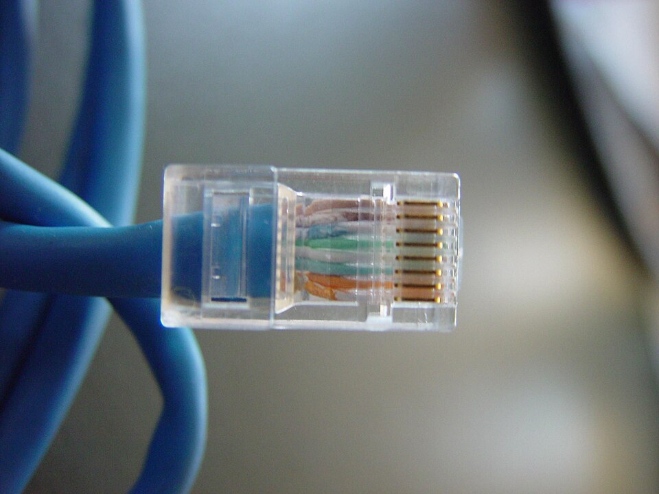

Tipos de cableado. Conectores.
El cableado es la infraestructura física que sostiene la red. Elegir el medio y los conectores adecuados determina el rendimiento, la distancia máxima y la inmunidad a interferencias.

1. Par trenzado (cobre)
Cable de pares de hilos trenzados para reducir interferencias. Se clasifica por categoría:
| Cat | Velocidad | Uso |
|---|---|---|
| Cat 5e | 1 Gbps | LAN básica |
| Cat 6/6A | 10 Gbps | LAN de rendimiento |
| Cat 7/8 | 25-40 Gbps | Centros de datos |
Existen versiones UTP (sin blindaje) y STP (blindado, para entornos ruidosos). Las normas T568A/B definen el orden de los hilos en el conector RJ45.
2. Fibra óptica
- Monomodo: largas distancias, un haz de luz.
- Multimodo: distancias cortas/medias, varios haces.
- Ventajas: inmune a interferencias electromagnéticas, gran ancho de banda y distancia.
- Conectores: LC, SC.
3. Coaxial y otros
El coaxial (BNC) fue común en redes antiguas (Thin Ethernet) y hoy pervive en TV e instalaciones específicas.
4. Pérdida y calidad
Toda instalación introduce pérdida por inserción; por ello se certifica el cableado (norma ISO/IEC 11801) y se evitan doblados pronunciados y cruces con cables de corriente.
graph TD NODO1[PC] -->|UTP Cat6 RJ45| SW[Switch] SW -->|Fibra LC| NODO2[Edificio B] SW -->|Coaxial BNC| ANTIGUO[Red legada]
mindmap
root((Cableado))
Cobre
UTP
STP
Cat5e-8
Fibra
Mono
Multi
Conectores
RJ45
LC
SC
Ejemplo resuelto en clase
Caso práctico: Elegir cable y conector para un tramo.
- Mide el tramo: si < 100 m y interior, elige UTP Cat 6 con conector RJ-45.
- Si va por exterior o hay ruido eléctrico, elige STP (apantallado) o fibra.
- Crimpa un RJ-45 siguiendo la norma T568B (blanco-naranja, naranja, blanco-verde, azul, blanco-azul, verde, blanco-marrón, marrón).
- Verifica con comprobador de cable que los 8 hilos pasan.
graph LR CABLE[UTP Cat6] --> CON[RJ-45 T568B]
Ejercicio para resolver (que propone el profesor al alumno): El alumno crimpa un latiguillo y lo verifica con comprobador, entregando el esquema de colores.
Ampliación de contenido
Para entender lo anterior (puentes conceptuales)
- El cable es el "camino" de los datos. Igual que una autopista ancha deja pasar más coches, un cable de mayor categoría soporta más velocidad; pero la velocidad real también depende de los equipos en los extremos.
- Cobre vs fibra: coste vs distancia. El cobre es barato y familiar pero sufre interferencias y distancias cortas; la fibra es cara y delicada pero viaja kilómetros sin perder señal ni verse afectada por electricidad.
- Conector y cable van de la mano. No basta elegir fibra: hay que elegir el conector (LC, SC) y la terminación. Un RJ45 no entra en fibra; el conector es parte de la decisión.
Para profundizar en los contenidos actuales
Par trenzado y categorías. El trenzado de pares cancela la interferencia electromagnética. Cat 5e (1 Gb), Cat 6/6A (10 Gb), Cat 7/8 (25-40 Gb) marcan el ancho de banda; UTP (sin blindar) basta en oficinas, STP (blindado) en entornos industriales con ruido.
Norma T568A/B. Define el orden de los 8 hilos en el RJ45. A y B son cruces distintos del mismo estándar; lo importante es ser coherente en ambos extremos (o usar cable directo si los equipos lo negocian con Auto-MDIX). Un orden incorrecto da cable "muerto" o a media velocidad.
Fibra: monomodo vs multimodo. Monomodo (una sola luz, láser) para largas distancias (km); multimodo (varios caminos de luz, LED) para corto/medio alcance (edificio). Los conectores LC (pequeño) y SC (empujar y click) son los comunes.
Distancia máxima de cobre (100 m). Ethernet sobre par trenzado tiene ~100 m de alcance antes de perder señal; más allá se usa fibra o repetidores. Por eso en campus se combina cobre en aula y fibra entre edificios.
Coaxial y legado. El coaxial (BNC) fue de las primeras redes (Thin Ethernet) y televisión; hoy queda en instalaciones antiguas. Entenderlo ayuda a reconocer redes legadas.
Revisión didáctica
- Categoría alta no da velocidad sola. Cat 6 soporta 10 Gb, pero solo si switch, tarjeta y longitud lo permiten. El cable es necesario, no suficiente.
- T568A y T568B son ambos válidos. Lo clave es la coherencia en los extremos; no es que uno sea "mejor".
- Fibra no sufre interferencias eléctricas. Al usar luz, no le afecta el ruido electromagnético; por eso es ideal en industrias.
- RJ45 es de cobre, no de fibra. Confundirlos es error típico; la fibra usa LC/SC.
- Los 100 m de cobre son límite real. Pasado eso, la señal cae; usar fibra o repetidor.
Hilo de aprendizaje sugerido: (1) el cable como camino → (2) par trenzado y categorías (Cat 5e-8, UTP/STP) → (3) norma T568A/B y RJ45 → (4) fibra (mono/multimodo, LC/SC) → (5) distancia y cuándo usar cada medio → (6) coaxial legado.
Enlaces relacionados
Recursos externos
Vídeos y artículos recomendados para ampliar y preparar el tema: